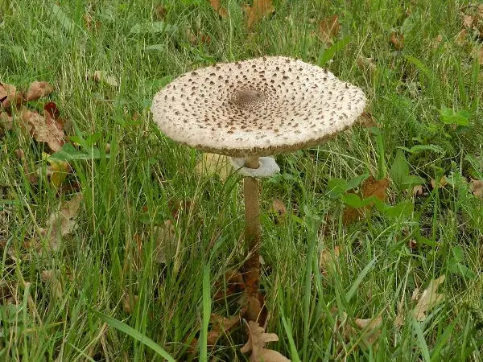
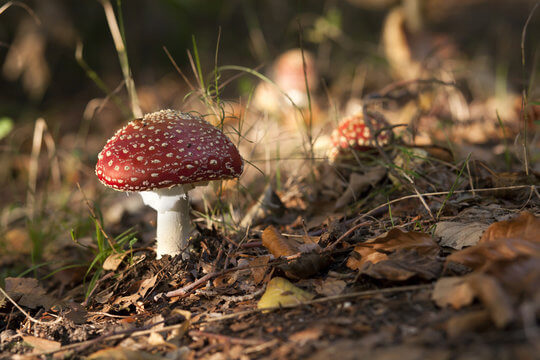

Grzyby dzielą się na grzyby jadalne trujące, niejadalne, grzyby mikoryza, grzyby saprofit, grzyby pasożyt
Grzyby to organizmy cudzożywne zaliczane do plechowców – organizmów nieposiadających tkanek ani organów. Grzybami o najprostszej budowie są jednokomórkowe drożdże. Jednak większość to organizmy wielokomórkowe o ciele zbudowanym z cienkich, nitkowatych strzępekstrzępkistrzępek tworzących grzybnięgrzybniagrzybnię.
| LP | Nazwa grzyba | Rodzaj | Numeracja |
|---|---|---|---|
| 1 | Kania | Grzyb jadalny | 311 |
| 2 | borowik | Grzyb jadalny | 321 |
| 3 | prawdziwek | Grzyb jadalny | 212 |
| 4 | Muchomor czerwony | Grzyb trujący | 111 |

U młodej kani kapelusz jest zamknięty i jajowaty (w kolorze brązowym), potem stożkowaty, a u dojrzałego grzyba - płaski i otwarty. Charakterystyczne dla kani są: kolor białawy z brązowymi łuskami, brzeg kapelusza - poszarpany, gęste, szerokie blaszki niedochodzące do trzonu oraz ruchomy pierścień na nóżce.

Śmiertelnie trujące grzyby zawierają swoiste jady, między innymi amanitynę, falloidynę, giromitrynę oraz orelaninę. W grupie tych grzybów znajdziemy takich przedstawicieli jak: muchomor sromotnikowy, muchomor jadowity, muchomor zielonawy, muchomor wiosenny, piestrznica kasztanowata, zasłonak rudy oraz zasłonak brodaty.